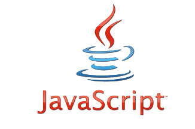
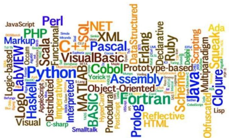

Что такое JavaScript?
JavaScript был создан, чтобы «сделать веб-страницы живыми».
Программы на этом языке называются скриптами. Они могут встраиваться в HTML и выполняться автоматически при загрузке веб-страницы. Скрипты распространяются и выполняются, как простой текст. Им не нужна специальная подготовка или компиляция для запуска.
JavaScript достаточно прост, но содержит все фундаментальные вещи: алгоритмы, объектно-ориентированную модель, структуры данных. Синтаксически он похож на язык С. Программа на JavaScript — это простой текст. Писать на JavaScript можно в любом текстовом редакторе.
Как работает JavaScript?
Любое действие пользователя на странице порождает событие. Программирование на JavaScript — это обработка событий. Вот как выглядит обычный сценарий:
- Пользователь что-то сделал на странице
- В браузере сработало событие
- Запустился JavaScript-код, который назначен на событие
- JavaScript изменил что-то на странице.
Программист пишет обработчик только для тех событий, на которые стоит реагировать:
- Пользователь кликнул мышью
- Сработало событие onclick
- Запустилась функция changePhoto
- В галерее сменилось фото
- Пользователь нажал клавишу
- Сработало событие onkeydown
- Программист не назначил обработчик события
- Ничего не произошло
| Категория | Описание |
|---|---|
| события мыши (Mouse Events) | click - событие происходит, когда пользователь кликнул мышью на элементе |
| события клавиатуры (Keyboard Events) | keypress - событие происходит, когда пользователь нажал клавишу на клавиатуре над элементом |
| события объектов и фреймов (Frame/Object Events) | load - событие происходит, когда загрузка объекта завершена |
| resize - событие происходит при изменении размеров окна браузера | |
| scroll - событие происходит, когда вы прокручиваете содержимое элемента, имеющего полосу прокрутки | |
| события формы и элементов управления (Form Events) | reset - событие происходит перед очисткой формы |
| select - событие происходит после того как Вы выбрали некоторый текст в элементе | |
| submit - событие происходит перед отправкой формы на сервер | |
| события перетаскивания (Drag Events) | dragstart – событие происходит, когда пользователь начал перетаскивать элемент |
| drag – событие происходит, когда пользователь перетаскивает элемент | |
| dragend – событие происходит, когда пользователь закончил перетаскивания элемента, т.е. когда отпустил курсор мыши | |
| события анимации (Animation Events) | animationstart - возникает, когда анимация CSS началась |
| animationiteration - возникает, когда анимация CSS выполняется повторно | |
| animationend - возникает, когда CSS анимация закончилась |
Ограничения
Классический JavaScript — это язык программирования для интернета, он бессилен за пределами браузера. С помощью JavaScript нельзя запустить программу на компьютере или записать файл в нужную папку.
Из-за правил безопасности браузеры ограничивают мощь JavaScript и за пределами «родной» страницы. Управлять вкладками можно при определенных условиях или же вовсе нельзя. Например, JavaScript может закрыть только ту вкладку, которую создал сам.
Сегодня JavaScript может выполняться не только в браузере, но и на сервере или на любом другом устройстве, которое имеет специальную программу, называющуюся «движком» JavaScript. У браузера есть собственный движок, который иногда называют «виртуальная машина JavaScript».
Как работают движки?
Движки сложны. Но основы понять легко.
- Движок (встроенный, если это браузер) читает текст скрипта.
- Затем он компилирует скрипт в машинный язык.
- После этого машинный код запускается и работает достаточно быстро.
Движок применяет оптимизации на каждом этапе. Он даже просматривает скомпилированный скрипт во время его работы, анализируя проходящие через него данные, и применяет оптимизации к машинному коду, полагаясь на полученные знания. В результате скрипты работают очень быстро.
Что делает JavaScript особенным?
Как минимум, три сильные стороны JavaScript:
- Полная интеграция с HTML/CSS.
- Простые вещи делаются просто.
- Поддерживается всеми основными браузерами и включён по умолчанию.
JavaScript – это единственная браузерная технология, сочетающая в себе все эти три вещи.
Конкуренты
Сейчас в вебпрограммировании нет ничего, что способно пошатнуть позиции JavaScript. Язык настолько удачен, что нет причин изобретать что-то другое.
С чистым JavaScript конкурируют только надстройки над ним: CoffeeScript, TypeScript, Dart. Код надстроек порой компактнее, его легче читать и отлавливать ошибки, но перед выполнением он все равно преобразуется в JavaScript.
Главным преимуществом JS можно считать его стабильную актуальность. Язык появился более 20 лет назад, но он продолжает развиваться.